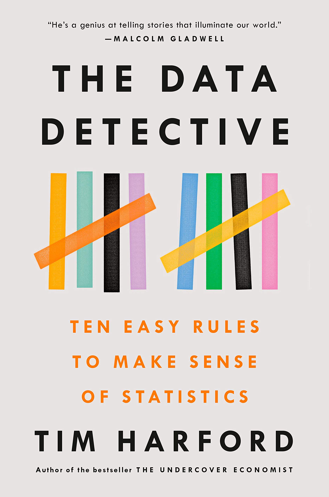
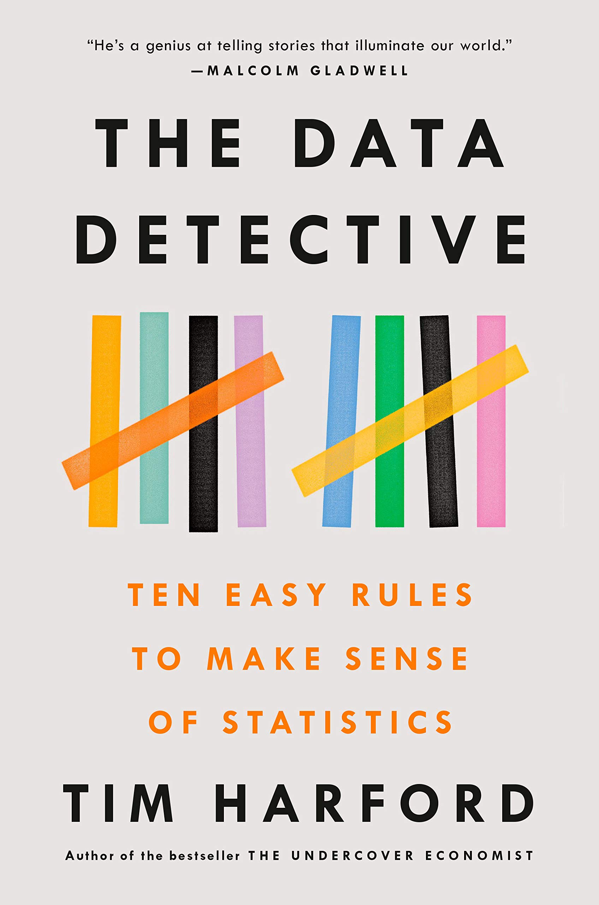
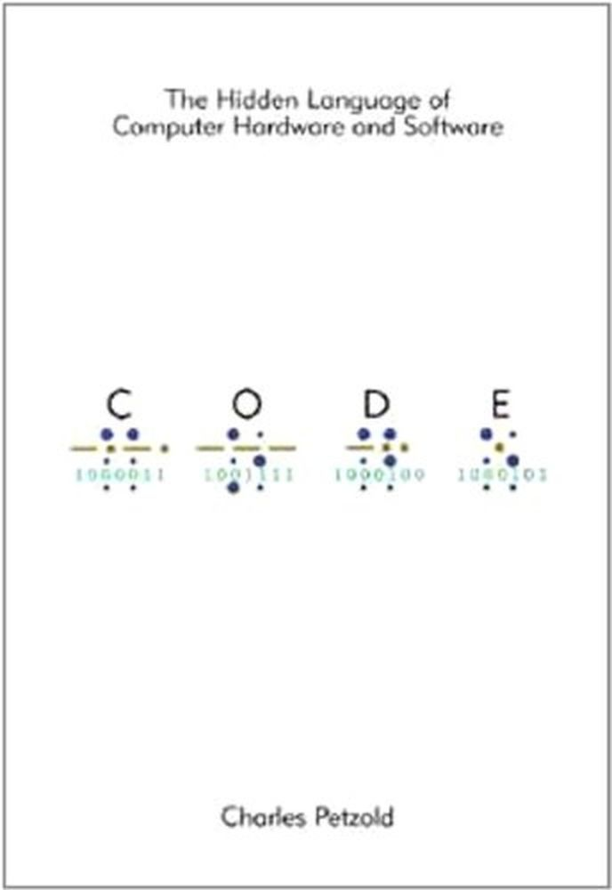
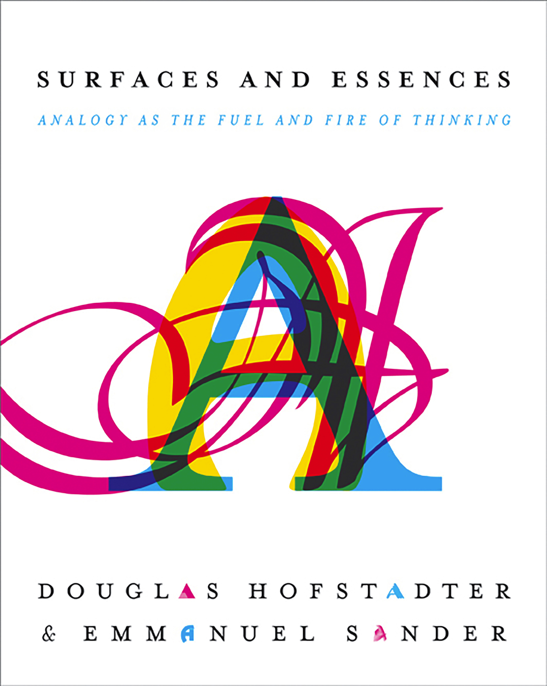
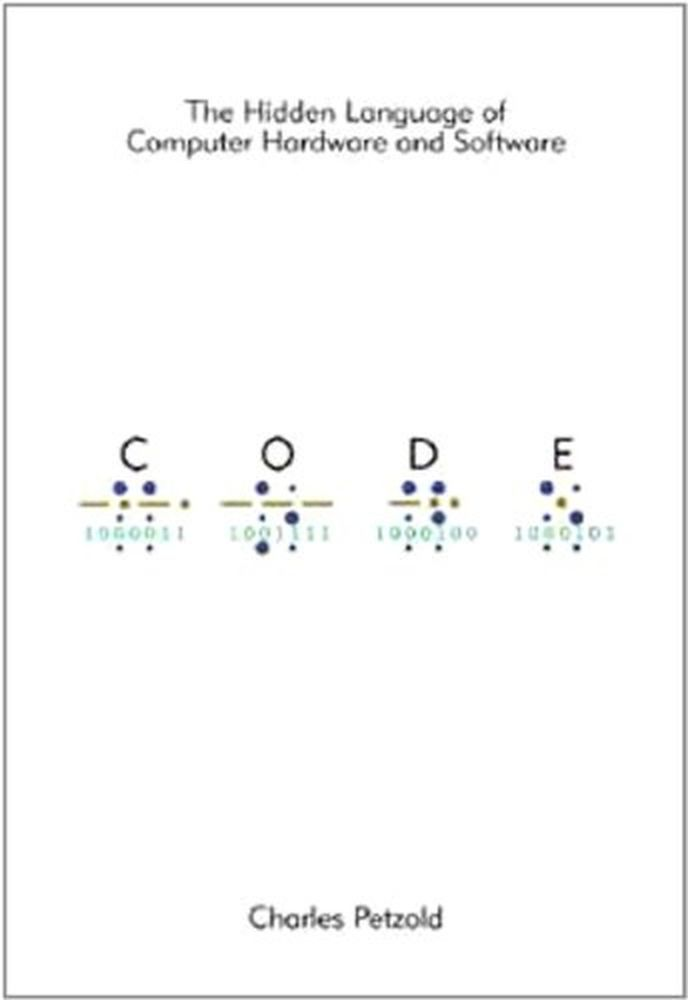
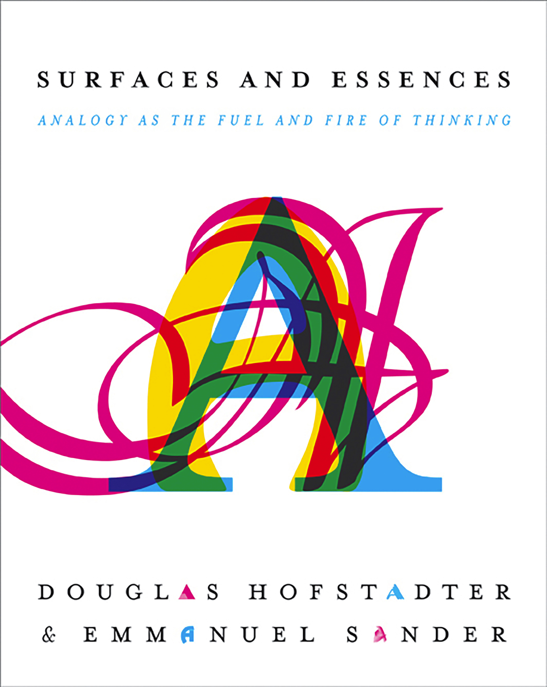

2021 Books review
List of books
 

 



The programmer's brain
Confusion sources
- lack of knowledge, not relevant facts in the long term memory.
- lack of information, not enough capacity in the short term memory.
- lack of processing power, personal working memory limitations.
The only game in town
Antigamente:
- Bancos competiam por depósitos.
- Governo pagava juros pelo seu título de dívida.
- Sociedade contava com bancos para financiar produção.
Bc
- Não perceberam quando operações financeiras complexas foram transferidas para os shadow bankings… Não mostrou evidências além de apenas mencionar.
2008
- Setor bancário não mais focava em canalizar depósitos em projetos produtivos.
Problemas da geração
- Como sair do liquidity trap
- Como escapar do balance sheet recession
- novas tendência produtivas
- Falta de investimento em infraestrutura
- Efeito de debt overhangs? debt overhangs that undermine existing and new productive capacity
- Efeitos demográficos
- E corrida contra as máquinas
Porque os mecanismos de recuperação não funcionam?
Excesso de savings, população não cresce e se torna mais desigual.
Impacto do fluxo de capitais estrangeiro no eme.
- Países desenvolvidos crescem pouco, estímulo monetário pelo bc, apetite por risco faz com que eme sejam destinação de capitais (tourist dollars).
- Esse fluxo de capital não é pro longo prazo e gera volatilidade.
- A fonte desses recursos advém de "fábricas de crédito" dos bancos centrais.
- Raghu Rajan fala sobre isso.
BIS brigade
- Efeitos de política monetária não comvencional em distorcer a ligação entre mercados e fundamentos enquanto não provém uma cure para o crescimento pífio.
Eme self insurance policies
- Reservas internacionais
- Câmbio flexivel
- Mudanças institucionais que façam o gerenciamento econômico mais responsavel e mais agil
Política monetária e desigualdade
- Expansão da.balanca de pagamentos favorece os que tem ativos, pois ao provisionar liquidez evitar vendas e queda de preço de ativos (suporte).
- O autor fala como se o objetivo do BC fosse o controle do preço dos ativos, mas vejo esse efeito como uma consequência do provisionamento de liquidez.
mpacto da desigualdade no próprio desenvolvimento do capitalismo
- Reduz a quantidade de consumo, demanda agregada.
Seguradoras e ambiente de baixo juros
- Juros baixo reduz lucro financeiro e dificulta para seguradoras (que tem caixa remunerado com renda fixa)
- Prejudica serviços financeiros de longo prazo em geral (pensões).
Banks and non banks
- Regulation is lagging for p2p lending.
- Risco de liquidez está underpriced.
- Credit intermediation is moving from the banking sector to the debt securities market. Market based credit (mehrling e jamie Caruana do bis).
Liquidity
- Depende dos dealers-brokers
- Algum fator induz todos os investidores a remanejar seus portfólios, se eles não conseguem por falta de liquidez, acabam liquidando outros ativos para compensar. Isso afeta as correlações dos ativos. Isso cria distorção no preço e afeta dealers alavancados usando money market funding.
- Mudanças na estrutura do mercado de intermediação: diminuição dos market makers (dealers) e diminuição do apetite por risco de balanço patrimonial.
Consequências da diminuição da atividade dos dealers
- Dealer tem acesso oa financiamento do BC (discount window). Através de bancos?
- Desafios p2p, legais e operacionais. Talvez blockchain ajude aqui.
Behavior, asset prices and central bank
- Notícias ruins sobre a economia, implicam em boas notícias para o mercado.
- Em vez de investidores reavaliarem seus valuations, eles assumem que o BC vai ser mais engajado em eliminar volatilidade.
- Juros baixo incentiva participação no mercado em busca de retorno e aumento da exposição ao risco (yellen do fed).
Gfc effects and equities prices
- Depois da gfc, empresas aumentaram reserva de dinheiro para eventualidades.
- Como rendia pouco, houve pressão da gerência e conselho para retornar esses recursos aos acionistas.
- Empresas então começaram a recomprar sua ações, distribuir dividendos e Merge and acquisitions.
- Aumentou preço das ações.
- Afetou correlações entre ativos (capm) todas as classes subiram juntas.
The only game in town
- Único jogo é depender dos bancos centrais.
Valuing liquidity and optionality
- Liquidez é sobre valorizada, Capm, por exemplo assume liquidez absoluta.
- Balancear passivo/ativo. As vezes é necessário desviar do senso comum e usar estrategia de gerenciamento de risco.
New New normal
- Emergentes pioraram, classe média diminuiu, desigualdade aumentou
- Avançados recuperaram
Câmbio
- O câmbio é onde a falta de coordenação multilateral e a falta de respostas política refletem.
Analysis of manias, panics and crashes
Kindleberger on the great depression
- Keynes talked about lack of demand, Friedman about fed lack of credit support.
- Kindleberger argued about the lack of international credit support.
Efficient market hypothesis and instability
- Incorrect prices should be corrected by trading, which reduces instabilities.
- More trade means more efficient pricing mechanics, hence international trade should promote more stable prices.
- A perfect market should have no crises. But this is not what happens.
- In reality, irrational behavior drives the market.
Kindleberger and Bagehot
- Bagehot says that CB should lend freely, at a penalty, to solvent banks.
- Kindleberger extends to insolvent banks.
- Avoid liquidity crisis to turn into solvency crises.
- Lender of last resort, where borrowers go for money to pay interest when no one is lending.
Global payment imbalances and oil crisis
- Oil production reduced hence prices went up.
- Surplus revenue from oil sale is used to invest on global securities.
- Capital flows is volatile and produces distortion on local markets.
How to tame a crisis?
- Monetarists call for controlling money supply.
- Some suggest regulation.
- Banks are not the cause but a symptom.
Exchange rate and interest rate
- Fix exchange rate does not allow changes in interest rate.
- Money supply affects exchange rate. Inverse proportional.
- Reduce interest rate, increase money supply, increase international offer, increase exchange rate (value o curry decrease in dollars).
- Free float currency allows government to control money supply.
How leaving the gold standard increased fragility?
old comments
Kindleberger
- Era contra a teoria de mercados eficiente.
- Era cético contra teoria monetária. Monetária tás acreditam que bolhas podem ser controladas com aumento no juros. Kindleberger dizia que bolhas surgiam por causa da expansão do crédito e fluxo de capital externo.
- Desenvolveu sobre as ideias de Bagehot.
- Foi o fluenciado por Minsky "instabilidade inerente da economia de mercado".
Resumo
- Crises decorrem de psicologia de mob, manada.
- Mania é o otimismo exarcebado.
- Manias são alimentadas pela expansão do crédito.
- Quando o preço dos ativos cai gera pânico.
- Instabilidade do mercado nunca vai desaparecer, apenas pode ser gerenciada.
Great depression
- Keynes. Falta de demanda que deveria ser criada pelo governo.
- Friedman. Falha do fed que deveria provisionar liquidez para que os bancos honrassem os depósitos.
- Kindleberger. Perspectiva internacional.
- Bolhas são alimentadas por crédito.
- Nova fonte de fragilidade na década de 80, global payment imbalances.
Sistema de pagamentos global
- Contexto do choque do petróleo.
- Fluxo internacional na bolsa nacional faz a bolsa e o câmbio valoriza.
- Quando esses ativos deixam de performar, investidores vendem rapidamente fazendo uma crise de depreciação (crise financeira) e desvalorização da moeda.
Lender of last resort
- Firmas pegam emprestado para rolar suas dias para o futuro, expansão do crédito
- Quem vai emprestar para elas cumprirem suas obrigações sem precisar liquidar ativos? Bc
- Sem o bc, quando as firmas muito dependente de crédito precisarem liquidar obrigações e não tiverem fonte de financiamento (mais crédito) elas precisa vender seus ativos e isso derruba os preços.
- Crise de liquidez gera crise de solvência
- Pois ao vender os ativos desvalorizados, o capital gerado não é suficiente para cobrir as obrigações.
Padrão ouro
- Fixa o preço do ouro em relação a moeda.
- Evita volatilidade entre moedas de diferentes nações.
- Sair do padrão ouro, significa que o câmbio entre moedas é determinado por oferta e demanda do mercado, mais volátil.
- Especuladores irracionais em busca de retorno podem causar muita volatilidade no câmbio entre moedas.
- Com moeda fixa ao ouro, pais não consegue controlar a oferta monetária. Pois, esse controle afeta a oferta e demanda pela moeda internacionalmente.
- Ex. Se Argentina abaixa o juros, ou seja, aumenta a oferta monetária. Isso também aumenta oferta da moeda no mercado global. A moeda fica menos escassa. Teoricamente o valor do peso deveria cair. Mas num sistema fixo, isso não pode acontecer.
- Sair do padrão ouro significa que o país pode controlar a oferta monetária.
- Controlar a oferta monetária pode ser útil para providenciar estabilidade ao crédito, pois pode reduzir ou aumentar conforme a atividade econômica.
2008
- Errado pensar que Lehman brothers foi a causa de crise.
Unlimited memory
Aprender e memorizar
- Aprender é adquirir novas informações
- Memorizar é armazenar essas informações
Vantagens de ter uma boa memória
- Mais informação armazenada implica em maior potencial para fazer conexões únicas entre elas
- Informação só pode ser construída com base em informação precedente, quanto mais se sabe mais fácil ficar saber mais.
O que é inteligência
- Poder recuperar informações da memória
Poder de acreditar
- Acreditar em algo mesmo que não seja verdadeiro permite guiar nosso comportamento
Eliminar conflito na mente para abrir espaço para aprender
- Controle sua voz interior, seu guia.
- Não multitask, intelecto pode ser treinado ao se fazer 1 coisa por vez.
- Saber o que você quer saber, propósitos guia. Clareza reduz resistência. Esse proprosito deve estar sempre sendo relembrado e na primeira instância da nossa mente.
Melhor absorver informação da leitura
- Usar imaginação e criar imagens na mente
- Lembramos mais facilmente de verbos pois temos uma imagem mental do que eles representam
Longo e médio termo
- Usar o que sabemos de longo prazo para armazenar e conectar com novas informações
- Nós só lembramos o que pensanos
Organização e aprendizagem
Peg method
- Associar informação a rima
Memory is the residue of thought
Analogy as the core of cognition
- We only learn by association
- Aprender é conectar informação nova com informação antiga.
- Quanto mais você sabe, mais fácil é conectar novas informações. Como uma bola de neve.
Guide to factor investing
Capm
- Only the market factor is considered
- Beta measures sensitivity to the market risk
- Beta is not just volatility (used to be a measure of risk…)
Beta definition
- Degree in which an asset tends to move with the market
- Correlation between asset return and market return multiplied by ratio between asset volatility and market volatility
- Beta is the market factor
Problems with capm
- Only explains 2/3 of difference in return of two portfolio
- Portfolio a return 10%, b 13%. Their beta difference explains only 2% of the difference. The other 1% is due another factor.
Return of small market cap stocks
- Higher return of small caps was not explain only with beta (correlation with market return)
- Beta did not explain excess return of small caps
- Size premium/factor
3 factors
- Size, value and market explain 90% of excess return (premium return)
Factors definition
- Factors are long/short portfolios
Size factor
- Subtract average return of portfolio with small cap stocks from portfolio with large cap average returns
- Is persistent, generates excess return 70% of the time for 5 year period analysis.
Msci eafe - developed outside north america, large and mid capa
Small cap growth anomaly
- Have lower return
Value stocks
- 30% stocks with higher book/price ratio
- Growth are the 30 lowest book/price ratio, their price is high compared with the book value
- Sharpe 0.34
- Growth are already big companies with stock price reflecting their value, maybe even overvalued
Sharpe ratio
- Angle of the security market line
- More steep, higher Sharpe, more return per unit of risk
Momentum
- Rank based on last 12 months, excluding the most recent
- Top 30 average minus bottom 30 average is the factor
- Up minus down
- Return is performance, up means high performance, price going up
- Momentum premium is higher than market premium
- Has the highest Sharpe ratio
Philosophy of software design
Comments
- Nice abstract level thinking with some gooD practical examples that can clarify them.
- It gives good abstractions so we can talk about design choices. Like: general purpose, deep module, independency between modulus.
Practical summary of guiding principles.
- Avoid information leakage.
- Design modules thinking about the information they need, not the order they occur.
- Modulus should have simple and clear interfaces but can hide a lot of functionality and information behind, they are deep (could result in larger).
- Modulus should be design such that they can be extendended independently without interference and without breaking things.
- We should be able to work on a module without knowledge of the others.
- Avoid repetition. Don't mix general and special purpose in a single place.
- A method should be understandable independently.
- Good abstractions when the user does not need to read the code.
- Avoid comments that repeat the code.
- Implementation that are hard to describe indicate bad design.
- Design of ease of writing, not ease of reading.
- Put time in design clean abstraction that reduce complexity.
- Development should be measured with abstractions, not particular isfeatures.
Process x essence
- Process oriented culture moved away from more essential questions.
Computer science fundamentals
- Problem decomposition.
- Always think about complexity and redesign when an improvement opportunity appears.
How to reduce complexity
- Avoid special cases.
- Use identifiers in a consistent way.
- Encapsulate so people can work on a system without been exposed to all it's complexity.
- Good design minimize complexity.
- Design should be obvious. It is easy to develop without introducing bugs/incompatibility.
How to identify complexity (symptoms)
- Hard to made small improvements. Code propagation, a small change requires modification in various parts of the code.
- Hard to understand how the code works.
- Bug fix have high probability of introducing another bug.
- High cognitive load manifest itself in multiple dependencies, too much abstraction (few lines of code instead a couple more).
- Complexity accumulates fast.
Consequences of complexity
- If we need a lot much time to understand how to change the code safely it means the code is complex.
- Risky to modify code without risk of breaking or introducing inconsistencies.
- Unknown unkowns, How do I make sure that in order to develop the code I need just made modifications in a specific place.
Causes of complexity
- When a code can not be understood or modified in isolation.
- Dependencies are introduced as part of the design process.
- Define in a centralized fashion and provide a stard way to access this finial via an API.
- The API dependency is not obvious.
Tactically and strategically
- Tatic refers to short term vision.
- Just having a tatic is bad in the long run, a long term strategy is a solution.
- Long term success depends on structure of the code.
- A good structure should be obvious and facilitate extension of the code.
Modules guides
Modules should be deep
- High level division of the software. Can be a class, e.g.
- Ideally should be independent, modify one module should not break another.
- Common dependency: function arguments and code that calls this function.
- Deep: powerful functionality yet simple interface
- Cost is the interface and de benefits are the functionality.
- The interface is what introduces complexity into the system.
Dealing with modules dependencies
- Abstract division in interface and implementation.
- Interface manages the "what" and implementation the "how".
Shallow modules red flags
- Interface is as complicated as the functionality it provides.
- Too many shallow classes is proned to information leakage between them.
Problem with common guiding principle of "simple and small classes are better"
- Multiple small classes add complexity since each must have its own interface.
Interface design for common case
- Interface should be designed such that the common case is as simple as possible.
- The flexibility can be provided with specific methods.
- Do i need a separate object or can I built it Into other class? How is this object going to be used.
- Use composition (instanciate inside the class) instead of aggregation (passing instance as argument).
Information leakage
- Same knowledge is used in multiple places.
- Design decision impacts multiple modules.
- The opposite of leakage is information hiding.
- How to design such that this information affects only one class.
- Example: two classes assume a specific file format.
- Example: two class access a data frame with a common column name, if the name of the column change, both class will need to be fixed.
- Alternatives: encapsulate that information in a new class or merge the two classes that share the same information.
Temporal decomposition
- Temporal decomposition may cause information leakage.
- When a program is supposed to run sequentially.
- A sign of temporal decomposition is when a call to methods has to be done in a specific order. Shallow interface, would be better to merge into one class with a single method. This merged class would be larger but the information would be hidden with a simpler interface, the class would be deeper.
Overexposure
- When the user need to know about a rarely used feature to use a common one.
Dispatcher
- Method that uses it's arguments to select another method.
Pass thrugh variable
- Global variable makes it hard to create multiple instances of it.
- Alternative is a context object that stores global state information.
- He suggested aggregation to store context variables.
- Pass just to the constructor and store in as object attributes.
- If a new variable needs to be added, just change the context class.
- Problem: can hide dependencies and increase overburden on new developers. Specially if it is used indiscriminately.
Together or apart
- If components are independent, better apart.
- If they are dependent then separation is bad because it can hide dependencies.
- indication for been together: share information, used together (if bidirectional), hard to understand one without the other.
Long and short methods
- Longer are harder to understand.
- Splitting methods adds new interfaces, could increase complexity.
- Splitting should make it sinpler, always.
- A method can be Split by extracting subtasks.
- If the subdivision resulted in multiple shallow methods, then it might just add complexity.
Exceptions handling and complexity
- Centralize where exceptions are handled.
- Errors that are not worth been handle should just report back and abort the application.
- Aggregation of exceptions when an error propagates.
How to define special cases out of existence
- Normal cases should be designed to handle special cases.
Different layers different abstraction
- The way users/clients think about abstraction does not necessarily need a exact correspondence in the application, it can abstraded in another way. (Invisible selection for instance).
Masking exceptions
- Handling exceptions inside a module and masking them works of the exception information is not needed outside.
- Things that are not important should be hidden
Designing steps
- Start a design with it's interface.
Comments
Good code is not self docummenting
- Rational for design can only be in comments.
- Comments are good to express what can not be expressed with code but it is in the developer mind during production.
Comments and abstractions
- Abstraction is a simplified view of an entity.
- Abstraction omits details without losing its essence.
- Abstraction rational is not obvious from just code.
- Abstraction are used to provide an easy way to think about something.
- Good abstractions must be documented.
Things to do and to avoid
- Keep documentation close to related implementation. Ensures consistency.
- Avoid repetition.
- Avoid comments that just state what the code does. If someone can write the comment by just looking at the code, then it is unecessary.
- Avoid using the same words of the entity being documented .
- Comments farther from the code should be more abstract.
Documentation during the design process
- Comments can provide intuition or precision, high and low level.
- Variables comments should be with nouns and should convey the nature, what it represents, not how it is used.
- Comments should aid on designing thinking.
Implementation and interfacr comments
- Implementation describes how a class SHOuLD work.
- Interface comments show someone how to USE
- If interface comments also need to explain implementation, this is a bad sign a indicates shallowness.
Interface comments
- Starts describing the behavior.
- Return type.
- Restrictions on the argument.
- Exceptions that can be raised.
- Potential side effects.
Implementation comments
- What and why, not how.
- Comment before each loop to describe what happens each iteration.
Naming
- Avoid names that can have multiple behavior, "blocks" for instance, not clear.
Changes in code and overall design
- The design should be faced critically in light of a change.
- The change is easily implemented?
- The change causes side effects?
- With this every modification should improve the system design.
Obvious code
- More obvious if names are good and code is consistent.
Inheritance and composition
- Inheritance may increase complexity, it requires the knowledge of the whole family tree.
- Composition is a good alternative.
- Use a helper classe that can be used by multiple other classes without inheritance.
Agile
Definitions
- It is an approach to software development.
- Goals: development should be incremental, lightweight and flexible.
- Key: development is incremental and iterative.
- Each increments adds new abstraction and refractors old based on experience.
Problems
- Lead to tactical programming, narrow vision, focused only on adding working software without thinking about designing the overall system.
- This leads to increase in complexity soon.
- Best to increment with abstraction, not features.
Tests
Difference between unit test and system test
- Developers write their own unit test.
- Unit tests test a small section of the code, a single method.
- Unit tests can be run in isolation.
- Unit tests are managed with a coveraged tool, every line of code is tested.
- System tests ensure that different parts of the application work together.
- Tests give you confidence that the application is working.
Testing and design
- Good test coverage allows structural design changes that improve the code.
- Coding without refactoring the design mostly adds to complexity of the system.
Test driven development
- Write test before implementation.
- Test should ensure expected behavior.
Problem with TDD
- Focus on feature and not the design.
- There is an incentive to hack solutions just so they pass the tests.
When to write a test?
- When fixing bugs, write a test that fails because of it.
Design patterns
Getters and setters
- Better not expose instance variables (attributes).
- This violates the principle of information hiding.
- Getter and setter are shallow methods.
The data detective
General comments
- Books filled with those anecdotal histories for the author to make his arguments more credible. It is a recipe from Gladwell I think, for making best sellers. I think it is sometimes interesting, other times pointless and boring.
Why evidence is not enough?
Irrational humans
- Giving people more information is not enough to prove a point, there is also an emotional component. (Climate change eg.)
- The more details in an argument the easiest it is to convince people o something. If you want make a good article, pack it with details and shape the narrative.
Bias assimilation?
- People conclude not bases on data, evidence and scientific method. They more likely conclude based on their values and prior beliefs.
- Bias assimilation is a psychology term that explains polarization.
- Instead of converging to a single conclusion, based on evidence and facts, the more detailed is given the more polaring the ideas become.
- This happens because with more details people find more options to selectively choose the information that fits with what they already believe.
Does objective truth exists?
- Local and global consequences of our own set of truths. Being wrong about climate change will produce no harm to the individual, but to the collective.
Steps for being a data detective
- New information?
- Are we looking for a conclusion?
Correlation and causation
- Just because there is some evidence that the additional factor caused.
The lean start up
Comments
- Addresses the feeling of not acompliing anything when the work is intangible.
- A product is any source of value. It can be very general and abstract.
- Multiple tests data allows learning mentality whereas single data points induce "political selling".
- Empirical results are better than speculation (scientific method in business).
- Good questions combined with good data results in effective analysis.
- Robust and simples automated report generator is good to improve the characteristics of "auditability" of the analysis.
Why startups fails
- Start ups don't know their product nor their customers.
What is validate learning?
- A process to gauge if they are making progress.
- Build measure learn loop.
- Learning happens with experimentation systems designed by senior management.
Start up goal
- Figure out what the customer wants and will pay for it.
- Fast iteration and customer feedback are key factors.
- The vision is consistent, but the product can change.
Build, measure and learn feedback loop
- Analogy with steering a car instead of lunching a rocket.
What characterize a startup
- Hiring process that selects creative people.
- Culture building that fertilize productivity environment.
- Process that manages and coordinate activities of the employees.
Difference between learning and validate runs
- Validade learning is not a realization after the fact to cover a failure.
- Validate learning is for demonstrating progress.
Effort and value creation
- Agile development is not enough to guarantee value creation, it can lead to waste.
- "Learning" in a start up means to find what the customer (end) values.
- Effort should be directed in "valeu pathways" otherwise it's waste. Nasser.
- Getting early feedback is good to learn about what creates value.
- Effort should yield learning about customer want.
Job descriptions
- Head of product development: ensure timely delivery of high quality products and features.
Why validation learning?
- Validation comes from systematic testing.
- Scientific method into business decisions.
- It is a form of value to learn how to create a sustainable business.
- A sustainable business is made out of a product that customers want.
Steps to better approach a project/enterprise
- Breakdown vision.
Startup beginnings
- Value and growth hypothesis.
- MVP allows minimum effort to test the hypothesis.
- Facebook value hypothesis was validate with data about user time in the platform. Growth was validate through rate of change of users.
What is vision?
- Start with a premise assumption
- This premise should be a way to achieve the companie's value.
Why MVP is important?
- Quickly gets you to a stage where you can measure and learn.
- The goal is to test the fundamental business hypothesis.
Types of MVPs
- Videos that demonstrate the product and ask for registration To waiting list, proving the value hypothesis.
Quality
- Can be defines as costumer perceived valeu.
- Low quality MVP can be used to find what costumer values.
How to measure progress
- Learning milestones prove that you are "executing with discipline" or "executing in a systematic way".
- Cohort analysis can rule out the exponential growth effect and give a better assessment of current decision.
- Actionable metrics differ from "vanity metrics" which measure a gross value without segregating the causes.
Characteristics of good metrics
- Actionable, clear question lead to clear results that can be acted upon.
- Clear question also makes it clear how to proceed to answer it, which leads to easy replication.
How to evaluate productivity?
- Check if efforts are contributing to value creation.
Pivot or persevere
- Frequent meeting to decide between pivot or persevere.
- Analogy making is important to decide pivot strategy.
How to hold people accountable for learning?
Small batches versus mass production
- Communication costs between process in mass production is considerable.
- Small batches allow discovery.
Where does growth comes from?
- The engine of growth uses past costumers as fuel to generate new customer.
- This can be materialized as word of mouth.
- Funded market and subscription based products.
- Enginea of growth are a focal metric point.
What is marginal profit?
- Revenue generated by a costumer minus the cost to acquire the costumer.
- This can be used to marketing.
Code
bit
- Bit is the building block of information.
General comments
- Gets boring sometimes with all the explanations about calculations.
- Had to stop reading on page 211, because it is too detailed.
Surfaces and essences
My comments
- This books is an exiting and stimulant voyage in metalinguistic. Text talking about text in an abstract way.
- Very engaging and interesting.
- Brilliant the transition from "he who steals an egg might still an ox" to "he who gives an egg might give an ox"
- Why the English uses "surfaces and essences? Essence finding is an act of analogy making to pin point the main idea.
- We observe the surface but through analogy making we can reach its depths.
- Simple ideas that carry a lot of deep concepts and abstraction behind.
Concepts, thought and analogy
- Analogies create concepts
- Concepts create thoughts
- A sequence of analogies characterize a concept which is synonyms with category
- Eg, Mother is a mental category in which thousands of analogies enriched
- A concept sophistication increases as more analogies enrich its idea
- Each instant of thought is marked by an analogy
How concepts and analogies are related
- Analogies triger concepts that help us make sense of the new with the old.
- Analogy making and categorization are the same phenomenon.
Categories
- Mental categories are not simple drawers where things are collected.
- Category is a dynamic mental structure.
- Categorization allows the individual whos mental process carries it to see the invisible.
- Categorization is the process of linking an entity to a prior category.
- Categorization is central to thinking (cognition) and analogy is the mechanism to perform it.
- Sometimes they don't have labels. Non lexical.
- We know more categories than words.
- Analogical perseptions allow us to readily identify instances of categories.
- The crux of perseption is the act of abstracting. And the abstraction allows us to create and extend categories.
Analogy as the motor to cognition
- No only proportional type
- Mental process of searching past knowledge and relating to new
- Selective exploitation of past experience to shed light on new things
- Is the machine behind thought, ie categorization
Essence of human being
- Triggering of memory by analogy
- Thinking: when we link present to the past with analogies
What is cognition?
- Pysichological phenom
- Thinks means to look for resemblances. If no resemblances are searched, there is no thinking.
What is a concept?
- Abstract pattern in the brain.
- Mental structure.
- Represents recurrent and regular aspect of the world.
- Does not matter how many informations or books do you have, what counts are concepts internalized.
Concept building
- "Building a house in which the house change the nature of the bricks that made the house."
- Hierarchical natura but not rigidly structure, fluid
- Sequence of analogies can carry us from concrete to abstract.
- Concepts can be extendended analogically with a snow ball effect.
- Concept become an integral part of the person who acquires it.
- Aquire a concept means to be able to use it to make new analogies.
Categorization
- Precised categorization is almost impossible
- Categories can be a continuum, not discrete boxes. (Orwell animals farm, one animal more equal than others)
- The name label can be extrapolated to include new entities related by new analogies.
- A group of words can represent a category that stretch the meaning of the inidivual words.
Hofstadter quote
"the outset seemed odd and unnatural gradually become so familiar that in the end one no longer sees what could at first have seemed puzzling or confusing about them."
Words
- Semantic is related to the meaning of the word.
- Syntactic to the role of the word in the phrase.
How we learn?
- Analogy broadening allows us to acquire new concepts.
Proverbs
- Does not count as true but their ability to cast light in a situation.
- They work in a abstract level further than the meaning of the words.
What it means to abstract something
- To abandon less important aspects
- The meaning can be lost depending on the abstraction level.
Naming concepts benefits
- Allows people fumigate them.
- People can act on them and exert influence on others.
What is intelligence
- Is the ability to quickly get the essence when facing a new situation.
- This is closely related to search and find analogies that can be applied!
- Number os concepts one has can be considered a component of intelligence.
- Not only the volume of concepts, but the density of connections between them.
- The collection of categories one has is the medium through which you can filter and perceive the environment.
What it means to think and it's relation with intelligence
- Analogical nature of our thought is the ceaseless activity of mapping fresh mental structures (new perceptions) with old mental structures (concepts).
- The constant search of new maps, analogies, is a mirror of our intelligence.
- "far from being an unthinking activity, the art of super-rapid right-on retrieval is the core of thinking"
More concepts make you smarter?
- Intelligence is the ability to pinpoint the essence of situations.
- The more vast and refined the collection of experiences one has, the more able one is of riding right analogies to capture the essence of something.
- Repertoire of categories at one disposal is a measure of intelligence.
- A concept becomes an integral part of the person who acquires it.
Collective intelligence
- Because of the snowball of new concepts been created with analogy from previous, peolo are increasingly getting more intelligent.
Tony Hoagland poem
There isn’t a word for walking out of the grocery store with a gallon jug of milk in a plastic sack that should have been bagged in double layers — so that before you are even out the door you feel the weight of the jug dragging the bag down, stretching the thin plastic handles longer and longer and you know it’s only a matter of time until the bottom suddenly splits. There is no single, unimpeachable word for that vague sensation of something moving away from you as it exceeds its elastic capacity — which is too bad, because that is the word I would like to use to describe standing on the street chatting with an old friend as the awareness grows in me that he is no longer a friend, but only an acquaintance, a person with whom I never made the effort — until this moment, when as we say goodbye I think we share a feeling of relief, a recognition that we have reached the end of a pretense, though to tell the truth what I already am thinking about is my gratitude for language — how it will stretch just so much and no farther; how there are some holes it will not cover up; how it will move, if not inside, then around the circumference of almost anything — how, over the years, it has given me back all the hours and days, all the plodding love and faith, all the misunderstandings and secrets I have willingly poured into it.
This is water
- Humans surrounded by analogies they don't notice as the fishes are surrounded by water they don't feel.
- Some analogies don't have a label, they are non lexical.
Analogical instinct and complexity
- Our analogical instinct nature is a constant battle to carry ourselves, stay afloat, in a complex world.
- Every analogy one makes triggers a subsequent acceptance or denial like an uncontrolled chain reaction.
Analogical nature of empathy
- "I am like you" is a form of analogy.
Psychology and Intellectual perception
Definitions
- We perceive through our senses but also through concepts.
- Our physiology has sensorial modalities, vision and hearing.
- Each modality can capture specific features (movement, colors).
- We are limited by the power of our senses, our field of vision.
- Psychology limits our senses perceptions to specific formats, encodings.
Perceiving and conceiving
- Our perseptions depend on our repertoire of concepts.
- The concepts filters the outside stimulus before they get into ourselves, our consciousness.
Conceptual encodings
- They allow our memories to be connected more efficiently.
- Different from total route or "perseptions without encodings".
- Memories are made by first processing them with our repertoire of concepts, then they are appropriately stored.
- When a concept is labeled it has anchors that makes them more easily remembered.
Analogical process and evolutionary arguments
- Reminding is the core process of understanding new situations.
- When we first receive a stimulus, an experience, we do not have all the categories related to the experience at first.
- We can not get at the same time of experiencing the highly abstract encoding to construct a road map to the money and this encoding category.